第31天：重定位之基本原理
第31天：重定位之基本原理
前面的学习中，多次提到重定位。现在，可以解开重定位的神秘面纱了。
引用符号的四种情况
在管理符号表的时候，我们把符号分为下面几类：
1 | |
其实，从本质上讲，符号就两类，一类是数据的地址，一类是标签。
根据符号的类型和引用场景可以分为 4 类:
1、引用本地的数据符号，例如下面第 5 行引用了 my_list，第 17 行引用了 monkey；不同的是前者在代码段引用，后者在数据段引用；
2、引用外部的数据符号，例如下面第 6 行引用了 ext_arr，第 17 行引用了 langlangshan；
3、引用本地的标签符号，例如下面第 7 行，引用了 @L101_return
4、引用外部的标签符号，例如下面第 8 行，引用了 print
1 | |
合并同类项
符号重定位发生在链接阶段。所以，有必要了解链接器的行为。如下图所示，当把 3 个 .o 交给链接器链接时，链接器会把同名的 section 合并在一起，如下图所示。
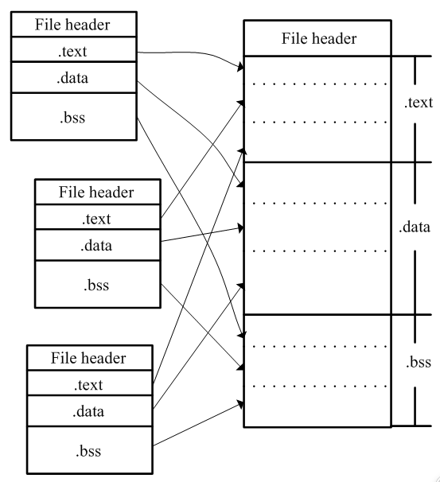
这里有必要介绍一下 .o 是什么文件
简单来说，Linux 中的 .o 文件是 可重定位目标文件 (Relocatable Object File)。
它是源代码经过编译器处理后、交给链接器之前的“半成品”状态，遵循 ELF (Executable and Linkable Format) 文件格式标准。
如果你用 readelf 命令查看，你会发现它主要包含：
.text段： 编译后的机器指令（代码）。.data段： 在函数外部定义，且赋予了非零初值的全局变量、在函数内部使用 static 修饰，且赋予了非零初值的变量。.bss段： 包含未初始化（或初始化为 0）的全局变量、在函数内部使用 static 修饰且未初始化（或初始化为 0）的变量。（.bss 在文件中不占实际空间，仅记录大小；我们没有生成这个段。）符号表 (Symbol Table)： 记录了本文件定义的符号（如函数名）和引用的外部符号。注意，这个符号表和我们前面生成的符号表不是一回事。
- 重定位表 (Relocation Section) 这个后面会讲。
读者不要觉得头疼，我会为你逐步揭开谜底。
需要说明的是，真正的 .o 文件如果不借助工具查看，读起来和天书一样。
为了讲明白什么是重定位，我准备了 2 个特殊的 .o 文件，把其中的二进制编码换成我们能看懂的汇编指令。
请看下图，最左边是文件 a.o，最右边是文件 b.o ；为了简化问题，它们都只有 .text 和 .data 段。它们的代码都很简单，和本文开头的那个例子没有任何关系。
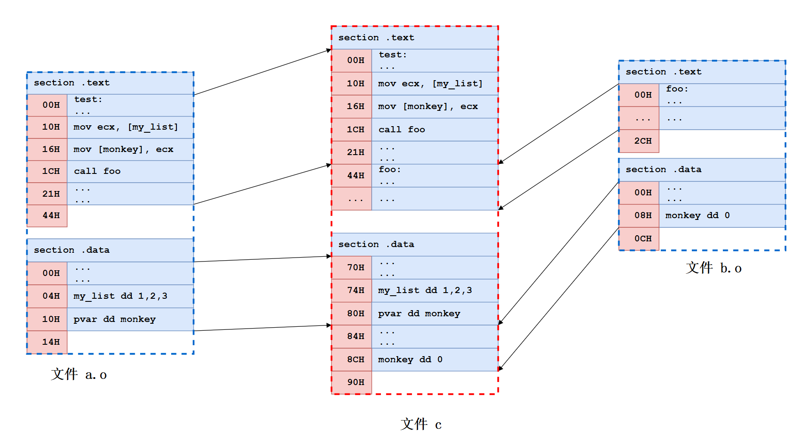
⬆链接示意图
经过链接器的链接，它们变成了文件 c（最终的文件 c 还包含了其他部分，为了突出重点，图中只展示出需要关注的部分）
说简单也简单，就是把 a.o 的 .text 和 b.o 的 .text 拼接成一个新的 .text，把 a.o 的 .data 和 b.o 的 .data 拼接成一个新的 .data；最后再把新的 .text 和新的 .data 拼在一起，生成文件 c；这个过程可以简单理解为“合并同类项”。
前面我们提到过“段计数器”的概念，汇编器遇到新段就会把计数器清零。
这在 a.o 和 b.o 中体现得很明显，也就是粉色背景的数字，段的偏移地址一目了然。
当拼接完成后，链接器会给它们重新编排地址，请看文件 c，地址从 0 开始，顺序增加（为了突出重点，不考虑对齐），到了 .data 段，不会清零，而是继续增加。
可以看到，a.o 的代码段偏移保持不变，但是 b.o 的代码段偏移有变化，它的第一条指令紧接着 a.o 的代码段结尾，也就是 44H（以 H 或 h 结尾的数字表示十六进制）；
a.o 的数据段的偏移也不再从零开始，而是紧接着 b.o 的代码段结尾，从 70H 开始。b.o 的数据段紧接着 a.o 数据段结尾，从 84H 开始。
到这里，我想读者应该明白了链接器是如何“合并同类项”的。
下面难度要升级了。
假设文件 c 被 Linux 系统加载到内存，准备执行。请问文件 c 在内存中的地址是多少？
对于 Linux 操作系统的 32 位可执行文件（ELF 格式），在不开启 PIE (Position Independent Executable）的情况下，可执行程序有个默认入口点，就是 0x08048000；
再考虑到可执行文件前面还有文件头等结构，我们就假定链接器给文件 c 的代码段分配的内存起始地址是 0x08048080（实际情况不是这样，这里就是打个比方）；
所以文件 c 的内存地址要在之前的偏移地址上增加一个基址：0x08048080
如下图所示：
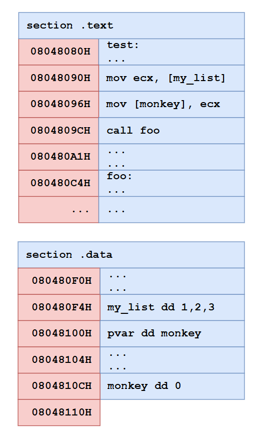
所以，经过链接器的安排，不管是数据段还是代码段，起始地址都发生了变化。
需要修正地址的情况
请问读者，针对本文开头介绍的引用符号的四种情况，哪些要修正地址？哪些不需要？
1、引用本地的数据符号
2、引用外部的数据符号
3、引用本地的标签符号
4、引用外部的标签符号
答案是除了情况 3，其他都需要。
因为不管是本地的数据符号还是外部的数据符号，在经过链接器的一番安排后，它们的地址都会改变。
对于 call foo 这种引用外部标号的情况，也需要修正；因为汇编阶段我们也不知道 foo 这个标号将来被安排到内存的哪个位置。
有的读者会困惑，引用本地的标签符号为什么不需要修正地址？
例如 je @L101_return
前面说经过链接器的安排，不管是数据段还是代码段，起始地址都会发生变化；
那么 @L101_return 这个标号的地址也会变化，需要在原来的地址上增加一个基址。
这种情况不需要修正吗？
相对寻址
jmp, je, call 等指令在编码的时候，它们的操作数不是一个绝对地址，而是一个相对偏移量。
假设我们有一段 32 位汇编代码，链接后的虚拟内存（读者不用纠结什么是虚拟内存，忽略“虚拟”二字就行）分配如下：
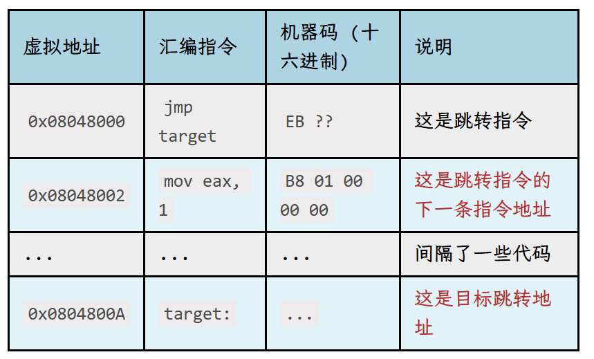
在编码 jmp target 这条指令的时候，不是把绝对地址 0x0804800A 硬编码到指令里面，而是求一个相对偏移。
- 目标地址 (Target): 0x0804800A
- 下一条指令地址 (Next PC): 0x08048002
- 计算： 0x0804800A - 0x08048002 = 0x08
- 最终编码
- 由于是短跳转（Short JMP），操作码为 EB：
- 机器码： EB 08
这里插讲一下什么是短跳转和近跳转。
短跳转 (Short Jump)
指令编码：通常以 EB 开头。
位移范围：使用 8 位（1 字节） 有符号偏移量。
跳转距离：只能跳转到当前指令前后 -128 到 +127 字节 的范围内。
特点：指令非常短（仅 2 字节），执行效率最高。
场景：主要用于 if/else 分支或短小的 loop 循环。
近跳转 (Near Jump)
指令编码：通常以 E9 开头。
位移范围：使用 32 位（4 字节） 有符号偏移量。
跳转距离：可以在当前代码段内跳转约 ±2GB 的范围。
特点：指令长度为 5 字节（E9 + 4 字节偏移），是编译器最常用的跳转方式。
我们的汇编器使用的是近跳转，因为针对 jmp 指令添加指令模板的代码是：
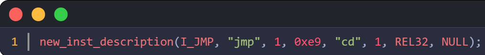
有的读者会问，为啥不是把绝对地址硬编码到指令里面，而是弄一个相对偏移呢？
原因很多，但是我认为最重要的是实现位置无关代码 (Position Independent Code, PIC)；
如果指令里存的是“向前/向后跳 100 字节”，无论这段代码被加载到内存的 0x1000 还是 0x5000 位置，这个“100 字节”的间距是不变的。链接器虽然会安排各个.o 中每个段的位置，但通常不会打乱单个段内部的代码顺序。
如此一来，je @L101_return 这种引用本地标签的情况不需要修正地址，相当于给链接器减轻负担。
不过汇编器就要担负起计算相对地址的任务了。
这并不难，前文已经给出了计算方法：
相对偏移 = “目标地址” 减去 “跳转指令的下一条指令地址”
有读者好奇，为什么是“跳转指令的下一条指令地址”？
问得好！这是为了配合 x86 CPU 的工作逻辑。
CPU 的工作就是机械地取指令、译码、执行。
当 CPU 取出 jmp target 这条指令后，硬件逻辑就会把 EIP 的值修改为当前指令起始地址 + 当前指令长度（也就是指向下一条指令）。
也就是 0x08048000 + 2 = 0x08048002；
取出指令，CPU 会译码，如果这条指令是普通的 add 或 mov 等指令，EIP 就保持在下一条指令的位置不再动了。
但对于 jmp、call 或 ret 等指令，CPU 会在执行阶段第二次修改 EIP；
如何修改呢？
对于 jmp / call： CPU 取出指令中的“偏移量”，将偏移量与当前 EIP 相加，用结果覆盖掉 EIP。
也就是 8 + 0x08048002 = 0x0804800A；
于是就跳转到目标地址了。
综上，为什么是“跳转指令的下一条指令地址”？
这是为了方便 CPU 第二次修改 EIP，因为 EIP 已经指向下一条指令了，所以偏移量要用 “目标地址” 减去 “下一条指令地址”。
代码中如何计算相对地址
再回到给单操作数指令编码的函数。
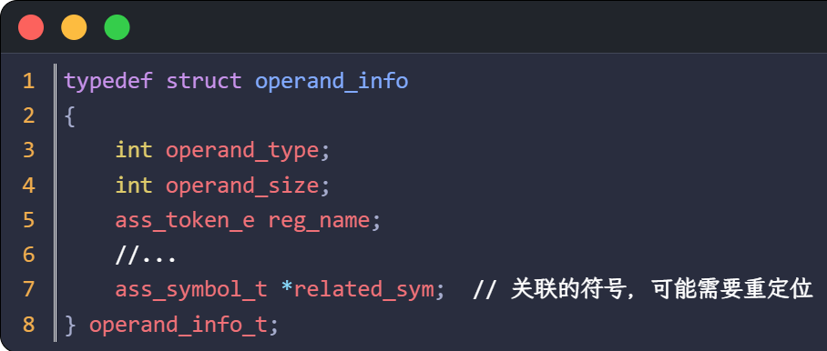
第 7 行，operand_info_t 中有个字段，related_sym，这是为重定位准备的。
如果操作数里面包含符号，就让 related_sym 指向这个符号。
目前 csub 生成的汇编代码，一个操作数最多包括一个符号，还没有遇到过包含两个符号的情况。
再看看 encoding_1_op_inst 函数的代码：
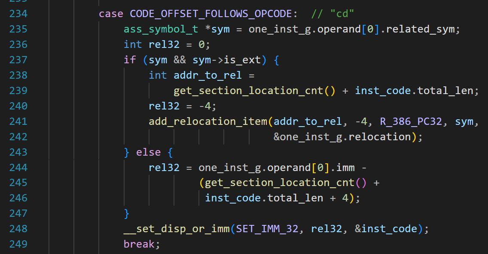
第 234 行表示指令编码规则是“cd”，也就是一个 32 位的偏移量。
第 235 行，查看是否有关联的符号。
第 237 行，如果有且是外部符号，那要交给链接器重定位，这个后面再讲。
第 244 行，如果是内部的符号，那就不劳烦链接器了，这个偏移值我们也会算。
one_inst_g.operand[0].imm 就是标号的地址。
get_section_location_cnt() 是位置计数器，因为这条指令还在编码中，所以返回值是上一条指令结束的地址，或者说本指令的起始地址。
inst_code.total_len 的值是主操作码的长度，如果这是近跳转指令，主操作码的长度是 1，最后加上 4（因为偏移占 4 字节），就得到了下一条指令的地址；所以 rel32 的值就是 “目标地址” 减去 “当前指令的下一条指令地址”；
第 248 行，把 rel32 写入指令编码。
手工修正地址
请读者思考：a.o 中哪些符号需要修正地址？
这个问题不难回答。首先找到 a.o 中所有引用符号的指令
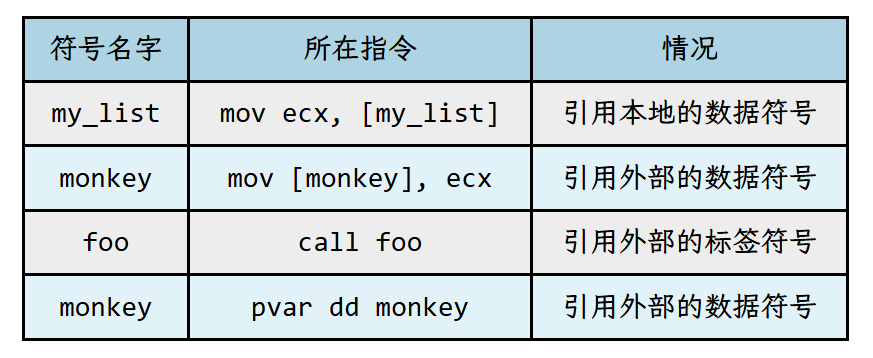
再看看是 4 种情况中的哪一种，只要不是引用本地的标签符号，就需要修正地址。
如上面的表格，非常不走运，一共有 4 处引用符号，这 4 处都需要修正地址。
到了这里，终于可以揭开重定位的面纱了。所谓“重定位”，说白了就是修正符号的地址。
下面，我带着读者来一遍“手工重定位”。
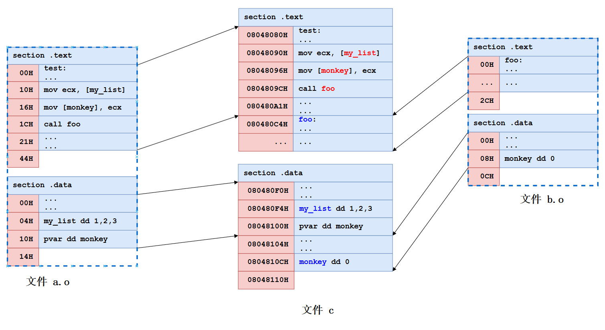
假设我们就是链接器，已经为文件 c 安排好了内存地址，如上图；
另外，通过观察我们知道了 a.o 中哪些地方要重定位，用下面的表格表示：
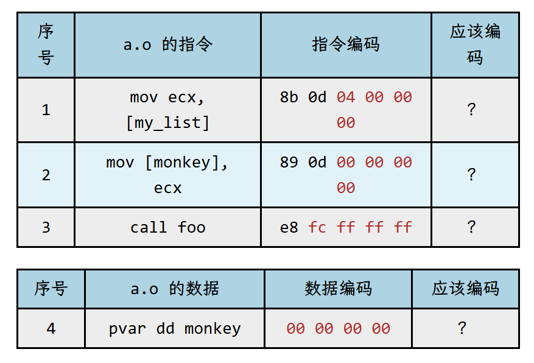
我们一条一条看
1、 mov ecx, [my_list]
因为在 a.o 中，my_list 的地址是 0x04，所以汇编器对指令的编码是 8b 0d 04 00 00 00，后四个字节就是 my_list 的段内偏移;
现在看文件 c，my_list 的地址是 0x080480f4，所以应该把 04 00 00 00 改为 f4 80 04 08
2、 mov [monkey], ecx
monkey 是一个外部符号，汇编器不知道它的偏移，所以用 4 字节的 0 占位（序号 2 的第三列）。
文件 c 中，monkey 的地址是 0x0804810c，所以应该把 00 00 00 00 改为 0c 81 04 08
3、 call foo
这条指令有点特殊，肯定有读者困惑，为什么指令编码是 e8 fc ff ff ff ?
难道不应该是 e8 00 00 00 00 吗？
这是一个好问题。不过读者别着急，等读到后面你就会明白。
文件 c 中，foo 的地址是 0x080480c4；
call foo 指令的地址是 0x0804809c; 这条指令的长度是 5 字节（1 字节 Opcode + 4 字节偏移量）。
前文讲了，相对偏移的计算公式是
偏移量 = 目标地址 - 下一条指令地址
所以，0x080480c4 - （0804809c + 5）= 0x23
所以要把 fc ff ff ff 修改为 23 00 00 00
4、 pvar dd monkey
同理，monkey 是一个外部符号，汇编器不知道它的偏移，所以用 4 字节的 0 占位（序号 4 的第三列）。
文件 c 中，monkey 的地址是 0x0804810c,所以要把 00 00 00 00 改为 0c 81 04 08
这 4 个例子，只有第 3 个用的是相对重定位，其他都是绝对重定位。
重定位表
为了让链接器能够正确修补地址，每个目标文件（.o）都会维护一张重定位表（在 ELF 格式中通常称为 .rel.text 或 .rel.data）。
下图是 a.o 的重定位表（由 nasm 生成）
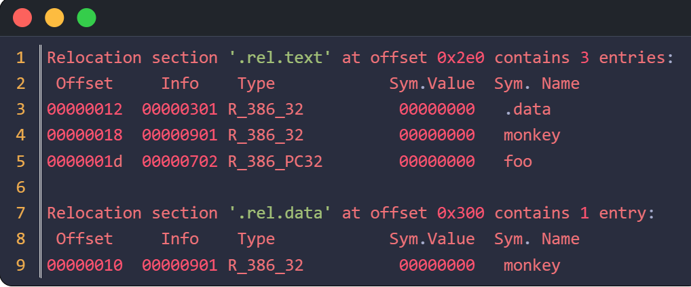
.rel.text 是一个重定位段，专门为代码段（.text）提供 “补丁说明书”。
.rel.data 也是一个重定位段，专门为数据段（.data）提供 “补丁说明书”。
这个重定位表，最重要的字段是 Offset、Type、Sym.Name
对于 Type,
- R_386_32 表示绝对重定位
- R_386_PC32 表示相对重定位
仅保留值得我们关注的地方，列成下面的表格
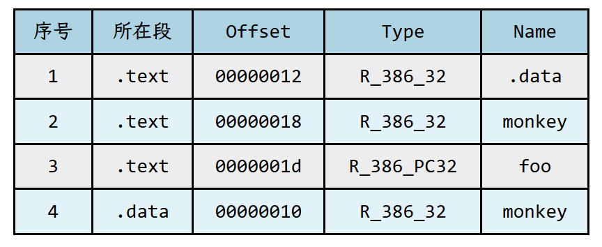
每个重定位条目（Relocation Entry）至少需要提供以下 4 个核心信息
1、偏移量 (Offset)
含义： 需要被修改的代码或数据在当前段（Section）内的具体位置。
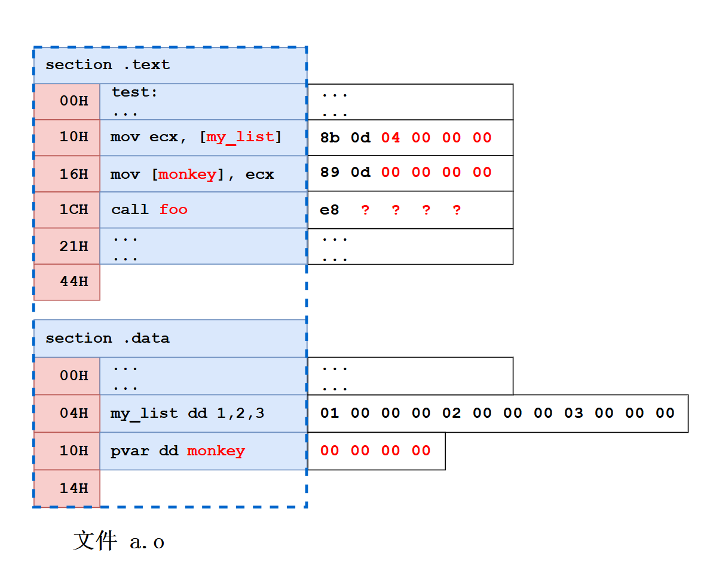
如图，.text段有 3 个地方要重定位，
- 符号 my_list 需要重定位的偏移量是 0x12
- 符号 monkey 需要重定位的偏移量是 0x18
- 符号 foo 需要重定位的偏移量是 0x1d
.data段有一个符号要重定位:
符号 monkey 需要重定位的偏移量是 0x10
2、重定位类型 (Type)
常见的类型有两种：
- R_386_32（绝对寻址）：适用于对数据符号的引用；这种类型通常用于数据段中的指针或代码段中访问全局变量。
- R_386_PC32（相对寻址）：适用于 call 或 jmp 指令中对标签的引用
3、符号名字: 告诉链接器你引用的是哪个符号。
例如，对于.text段，在 0x12、 0x18、0x1d 的位置，我们要引用的符号名字分别是 my_list，monkey，foo
对于.data段，在 0x10 的位置，我们要引用的符号名字是 monkey；
4、加数 (Addend)：本质上是一个常数，这个加数通常由汇编器存储在需要被重定位的地方
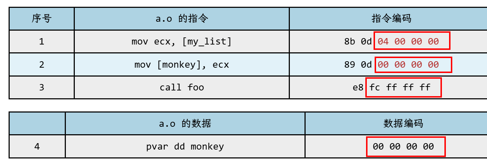
⬆加数示意图
我用红框把加数都框起来了，从上到下分别是 4，0，-4，0;
再回头看重定位表，信息，偏移，类型，符号名都给了；
但是加数呢？加数就在要被修正的指令编码中。
也就是说，加数就在 .o 文件里，需要链接器从 .o 文件中“读”出来。
现在，重定位的材料是凑齐了，不过还缺一个方法，就是如何根据这些材料把最终地址算出来。
重定位公式
我们先定义三个关键变量：
S (Symbol)：符号的最终虚拟地址（就是把程序加载到内存后，符号所在的地址）
A (Addend)：加数（预先存在于 .o 文件待修改位置的值）
P (Place)：重定位位置。链接器在合并所有 .o 文件并安排好内存后，需要打补丁的那个位置的虚拟地址
不同的类型，公式不一样：
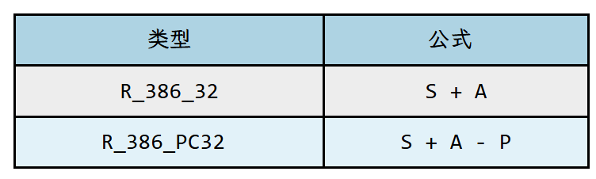
现在，我们再次把自己当成链接器，从它的视角再来一遍重定位。
序号 1：
.text 00000012 R_386_32 .data
步骤 1， S = ？
也就是 .data 的最终地址是多少？也就是 a.o 的 .data 被链接器安排了什么虚拟地址？
从链接示意图上可以看出是 0x080480f0
步骤 2， A = ？
用命令 “objdump a.o -d” 查看 a.o
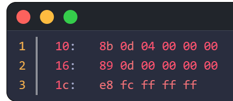
0x12 偏移处，4 个字节是 04，00，00，00
所以 A = 4
步骤 3，S + A = ？
0x080480f0 + 4 = 0x080480f4
这和我们之前得出的结论完全一致;
序号 2:.text 00000018 R_386_32 monkey
步骤 1，S = ？
monkey 这个符号的最终地址是多少？
从图中可以看出是 0x0804810c
步骤 2， A = ？
0x18 偏移处，4 个字节是 00 00 00 00
所以 A = 0
步骤 3，S + A = 0x0804810c
序号 4:.data 00000010 R_386_32 monkey
步骤 1，S = ？
S 是 0x0804810c
步骤 2，A 的值是多少
.data 段偏移 0x10 处是什么呢？
用命令 “objdump -s -j .data a.o” 查看
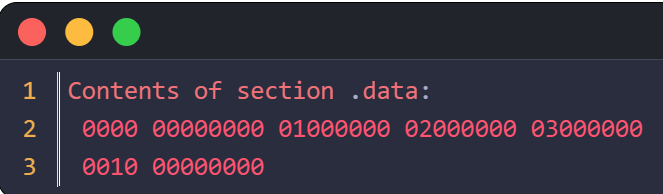
.data 段偏移 0x10 处是 00 00 00 00
所以 A = 0
步骤 3，S + A = 0x0804810c
以上都是绝对重定位。
我们看看序号 3，这是相对重定位
.text 0000001d R_386_PC32 foo
要重定位的符号是 foo，所以 foo 的虚拟地址就是 call 的目标地址，所以目标地址 = S
因为 P 是要修正位置的虚拟地址，也就是 4 字节偏移量所在的地址。
所以 call 指令的下一条指令的地址是 P + 4;
又因为
偏移量 = 目标地址 - 下一条指令地址 = S - (P + 4) = S + (-4) - P
再对比公式 ：偏移量 = S + A - P
因此，对于 R_386_PC32，加数 A 始终为 -4
再看看加数示意图， 0xfffffffc 换算成十进制就是 -4
把数值代入公式 S + A - P
S = 0x080480c4
A = -4
P = 0x0804809d
所以
S + A - P = 0x080480c4 -4 - 0x0804809d = 0x23
所以修正后的地址是 23 00 00 00;
再回到 nasm 生成的重定位表
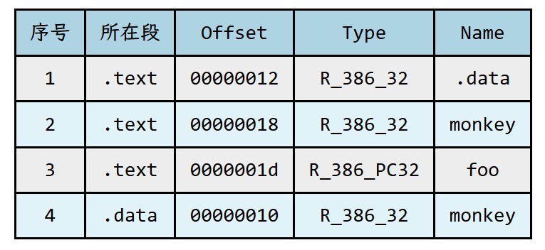
序号 2~4 我们已经搞清楚了。
序号 1 和我们的认知有偏差，应该是对符号 my_list 重定位，为什么是 .data 呢？
我们也动手验证了，.data 确实没有错。
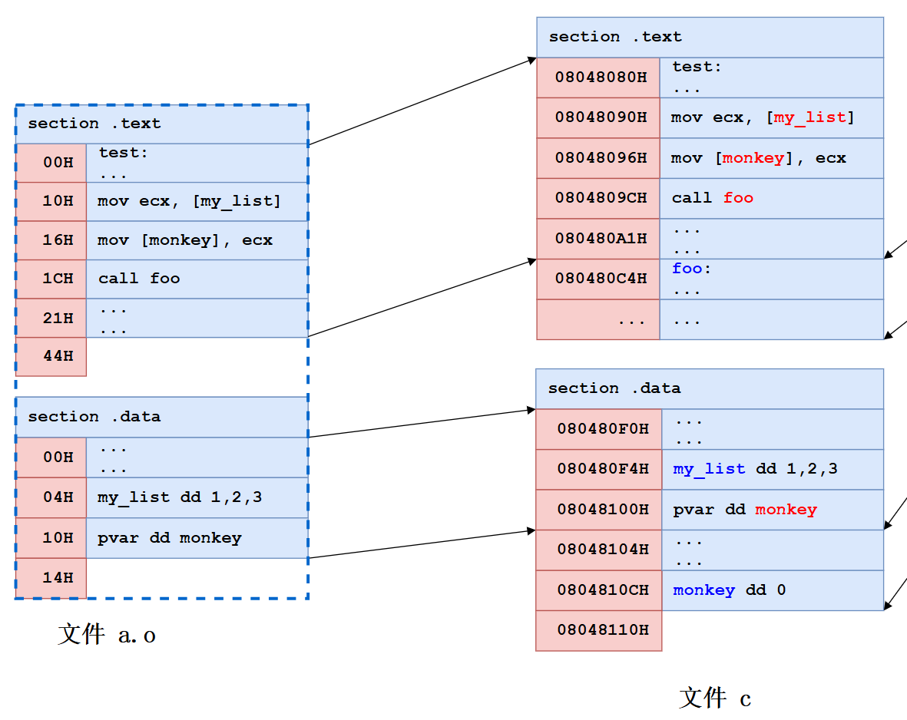
mov ecx, [my_list] 的编码是 “8b 0d 04 00 00 00”， 注意最后 4 个字节，其中第 1 个字节是 04，它来自 my_list 符号在 a.o 中的偏移。
在前面的计算中（重定位公式这节），我们把 4 当成加数；
修正值 = S + A = .data 的虚拟地址 + 4；
注意，my_list 相对于 a.o 的数据段偏移是 4， 这个偏移是不会变化的，不管链接器把 a.o 的数据段安排到哪里，这个偏移都是 4
所以，.data的虚拟地址 + 4 就是 my_list 的虚拟地址;
如果把 mov ecx, [my_list] 的编码改成 “8b 0d 00 00 00 00”
也就是说加数变成 0 了，那么重定位表给出的符号必须是 my_list;
这两个方案都可以，取决于汇编器的选择。
我们的汇编器采用 “把 4 当成加数” 这种方案；gcc 采用的是加数为 0 的方案。
需要注意，在“手工修正地址”这节，我们是靠观察重定位，不是靠公式，所以绕过了这个问题。
本文到这里就结束了，如果读者理解了重定位，我的心血就没有白费。